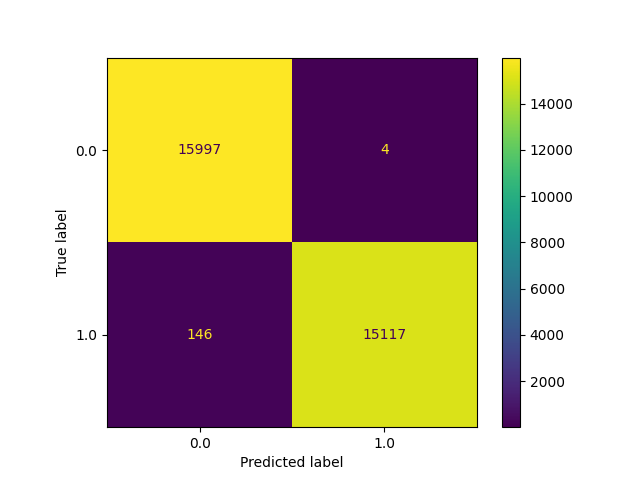
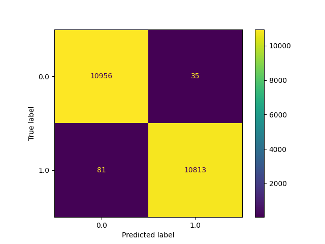
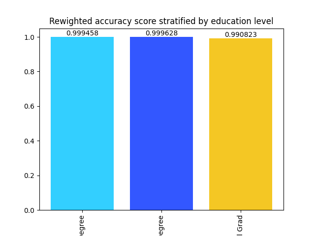

Model Card - IDOOU AI Budget Predicter
Model Details
-- Budget Predicter AI is a model that aims to predict the budget of the customers based on different available parameters or attributes.
-- For this purpose a Logistic Regression model has been built.
-- Fairness and accuracy of the model have been also considered.
-- Author: X. Laibarra with the support of Udacity and its community.
Intended Use
-- Based on the predicted budget, different activities will be recommended to every user.
-- The model will be implemented on a mobile app so the users can benefit from the recommendations.
Factors
-- Age
-- Educational level
-- Gender
-- Predicted budget
Metrics
-- The calculated metrics have been th following:
-- Accuracy
-- Statistical parity difference
-- Equal opportunity difference
-- Odds difference
-- Theil index value
Training Data
-- Training set: 50%
Evaluation Data
-- Evaluation data: 30%
-- Test data: 20%
Quantitative Analysis
--
--Before:
- Accuracy score: 0.9952021494370522
- Disparate Impact between unprivileged and privileged groups = 0.332479
- Statistical Parity Difference between unprivileged and privileged groups = -0.662471
--After:
- Accuracy score: 0.9946995659127256
- Disparate Impact between unprivileged and privileged groups = 1.000000
- Statistical Parity Difference between unprivileged and privileged groups = 0.000000
--
Results of the AI model after applying the bias mitigation strategy



Ethical Considerations
-- The used model and nature of data is transparent so the user can access to it.
-- Very low bias for the following educational levels: high-school and bachelor and masters degrees.
--
Caveats and Recommendations
-- No geographical information available.
-- Very wide badget ranges.
-- Salary/income ranges not available.
-- Further ethical AI analyses I would apply beyond this project:
-- I would identify how many people do not choose any activity and, if possible, why. I would make an analysis using the data of these people.
Business Consequences
-- Positive Impact:
- A good prediction of the predicted or suggested activities can lead to engage customers to the app, as they will be satisfied with the provided results and will hava a good app experience.
-- Negative Impact:
- A bad prediction can lead to the customers not to use the app and, furthermore, to recommend not to use it.
- If the app is not transparent, fair, save or if the data is not handled in trustworthy and private manner, the users will not trust and, hence, not use the app.